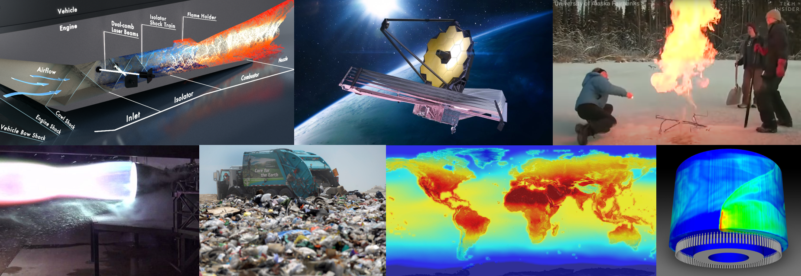

A Quick Introduction
Welcome to my personal website! I am a recent Ph.D. graduate from Greg Rieker's Precision Laser Diagnostics Lab at the University of Colorado, Boulder. I have experience with laser design and fabrication, nonlinear optics, molecular spectroscopy, and absorption linelist development. Even though I spend most of my time with physicists and optical engineers, my mechanical engineering heart is still passionate about ruggedizing new optical technology so that it can move out of the optics lab and be used for new and exciting applications.
This website is a platform for me to share cool pictures and videos that highlight my experiences, provide some links to connect, and (mostly) host my CV online. I am excited to continue my career in the field of optics. Thank you for visiting my website, I look forward to connecting with you!
Research Experience
In Greg Rieker's Precision Laser Diagnostics Lab at the University of Colorado, Boulder, we develop new laser sources to measure molecular absorption for a host of applications. I have measured velocity and mass flux through a hypersonic engine and developed absorption reference databases that can help us interpret JWST measurements. Laser spectroscopy is a powerful tool for understanding the composition and properties of a gas without touching it.

On this page I will highlight my work designing and building portable mid-infrared frequency comb laser spectrometers and improving the high-temperature fidelity of the HITRAN H2O absorption linelist.
Designing Portable Frequency Comb Lasers
Working closely with Nazanin Hoghooghi, Scott Diddams, and Peter Chang at NIST, Boulder, I helped develop a new frequency comb laser source for measuring high-speed, multi-species molecular absorption spectroscopy in the MIR. We took our first measurements in a shock tube, where we could measure formaldehyde decomposing into carbon monoxide at microsecond timescales, as shown in the GIFs below.
After using this spectrometer to determine chemical kinetics parameters, I led the design and construction of the next-generation of laser, our first portable mid-infrared dual comb spectrometer (DCS), shrinking the footprint from an entire optical table to a few 19" rack-mountable boxes, as shown below.
This is the first iteration of our design. The black box contains all electrical and fiber components (erbium fiber oscillators at 200 MHz, pump diodes, erbium-doped amplifiers, etc.) for each frequency comb laser, outputting femtosecond pulses of light 1-2 μm. We then use Intra-Pulse Difference Frequency Generation (IP-DFG), a technique developed by the Diddams group at NIST, in a bulk crystal PPLN to convert the near-infrared light from each frequency comb to mid-infrared light simultaneously spanning 3-5 μm. The generated pulses are combined and coupled into a mid-infrared optical fiber that can be routed to the measurement. My SolidWorks design shrunk the footprint by over 80% and is currently being used to generate MIR light, as shown below. When we're done, the lasers will be packaged for easy transportation to hypersonic engine test facilities, the arctic, and wherever our measurements are needed.
Improving Spectral Databases
Accurate spectral databases are crucial for calculating thermodynamic properties from spectral measurements. Dual comb spectroscopy (DCS) bridges the gap between low temperature (under 400 K), broadband (over 1000 cm-1) FTIR measurements and high-temperature (over 1000 K), narrow (under 5 cm-1) tunable diode laser measurements, and is the ideal spectrometer for validating and improving these absorption databases. Shown below is one of the 58 measurements that I took to improve our understanding of H2O absorption from 1.3-1.5 μm. Notice how DCS captures almost 200,000 spectral datapoints in a single measurement.
Processing all of this information to improve our molecular absorption models proved to be quite the challenge. I optimized our lasers to measure 3x the spectral bandwidth with 10x less noise than our previous measurements in this region and was having trouble processing this large volume of information. The screenshots below show the Fortran-based software used in our community. This interface is fine for simple molecules but was difficult to navigate while processing the complex structure of H2O absorption.
To overcome this challenge, I developed a custom Python wrapper for this Fortran solver. This allowed me to keep using this trusted resource but to do so hundreds of times faster than my predecessors. I went on to process 24,118 parameters for over 6,000 unique quantum transitions. Shown below is a small sample of the improvements made to the database.
Thanks for exploring this small sample of my work at the University of Colorado. I'm excited to see what comes next!